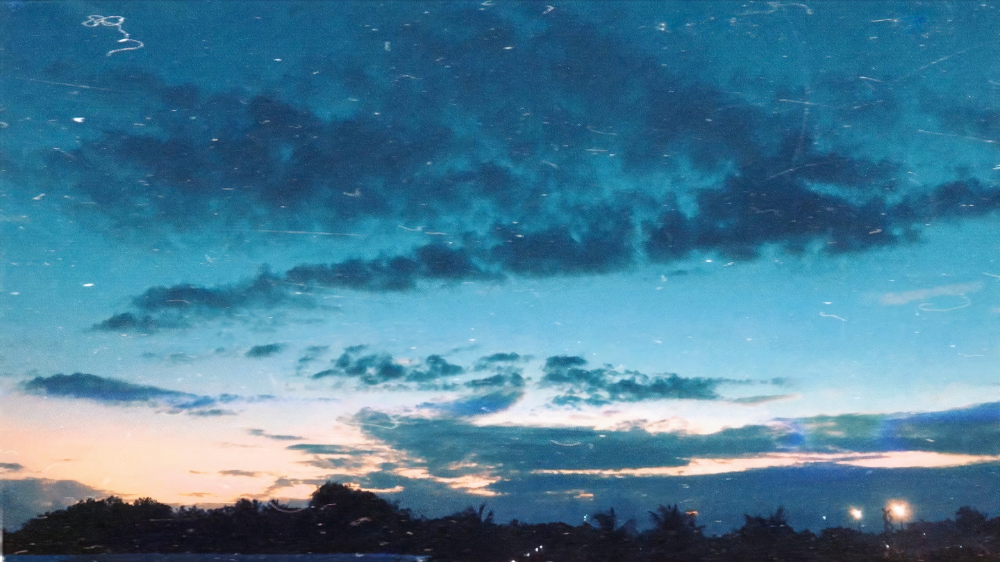

Oi amor, não esperava um site ne? KKKKKKKK
Então, vamo lá....
Sabe que eu, Lucas Firmiano, amo os EUA né?
Pois é, o Jean também sabia disso, e por esse motivo ele
me prometeu que da próxima vez que ele fosse viajar,
em especial para os Estados Unidos, ele me levaria junto
Por ironia do destino existia sim a intenção de viajar
para os EUA em 2019, em julho, porque a afilhada dele
(o amor da minha vida) iria comemorar seu aniversário lá,
uma viajem para Miami-Orlando-NY. E advinha quem foi também?
Exatamente, como o Jean tinha prometido me levar, eu fui.
Mal sabia o Jean que ia sair um namoro dessa viajem, e deixa
eu dizer pra vocês, é o namoro que ele vai ter que aguentar
pro resto da vida dele kkkkkkkkk
Exatamente, os EUA que tanto amo foi palco do início da minha
relação com o amor da minha vida, uma pessoa carinhosa, amiga,
amável, que se preocupa com os outros, com uma personalidade e
um caráter incrível, um MULHERÃO DA PORRA!
Primeiro dia dos namorados que passo com alguem na minha vida, e
olha só? Com o amor da minha vida, o primeiro de infinitos que vou
passar com você!
Obrigado por tudo que ja fez por mim amor, por me ajudar, me aconselhar,
pelo simples fato de estar comigo sempre que preciso, muito obrigado
Você é incrível!